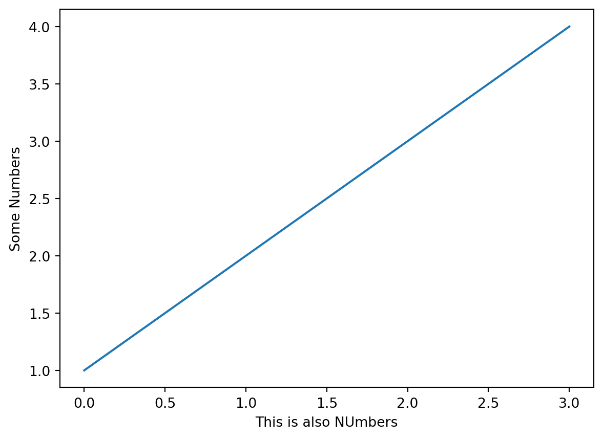
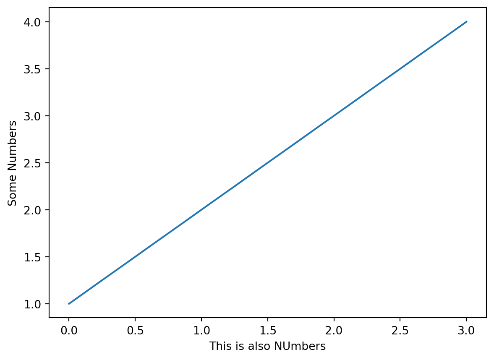
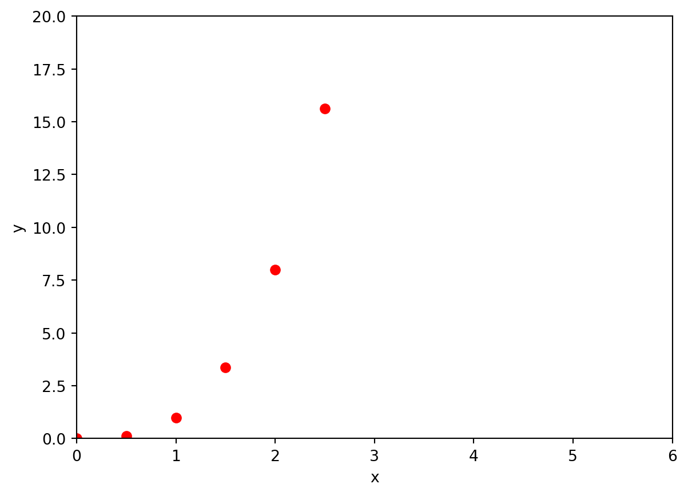
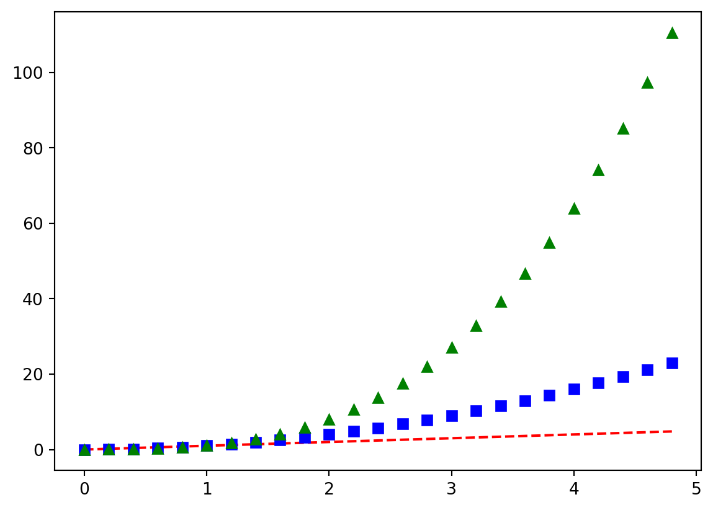
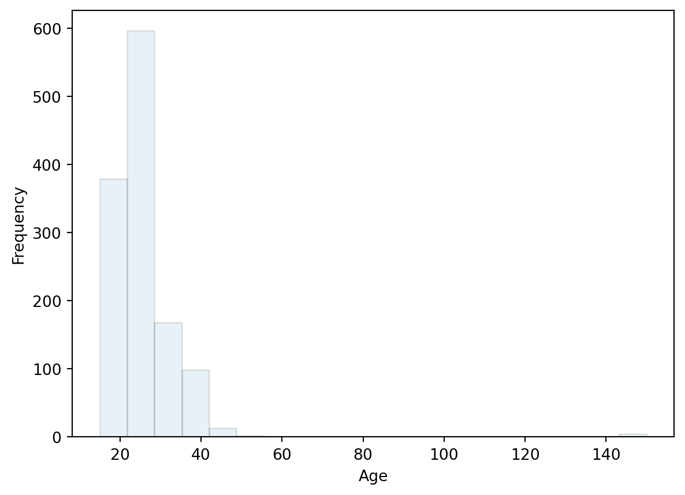
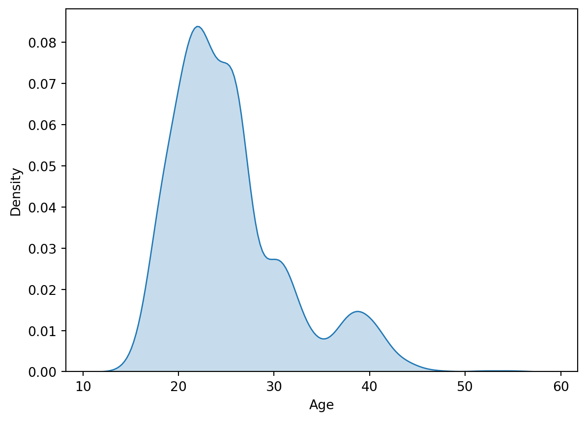
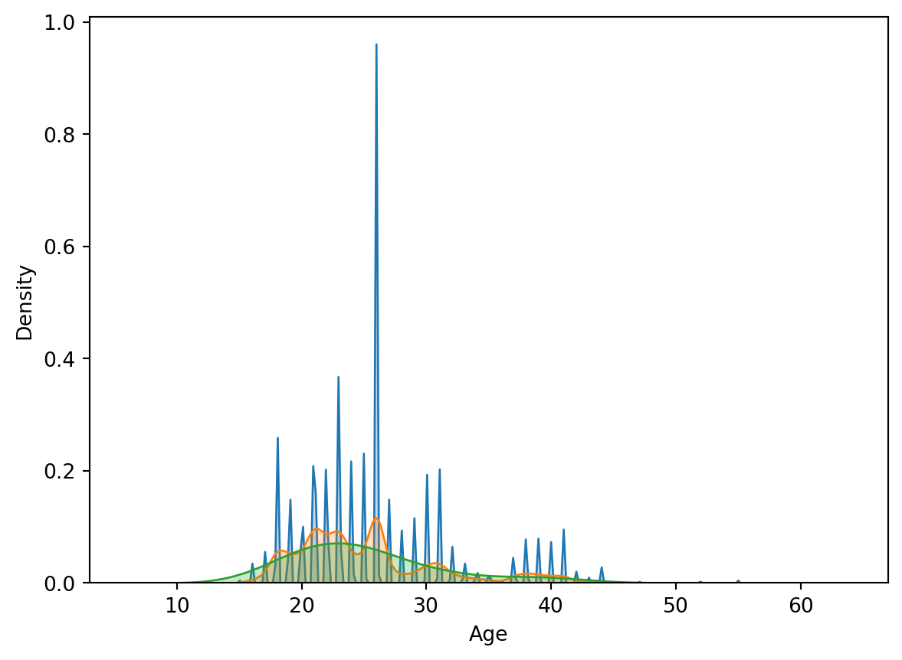
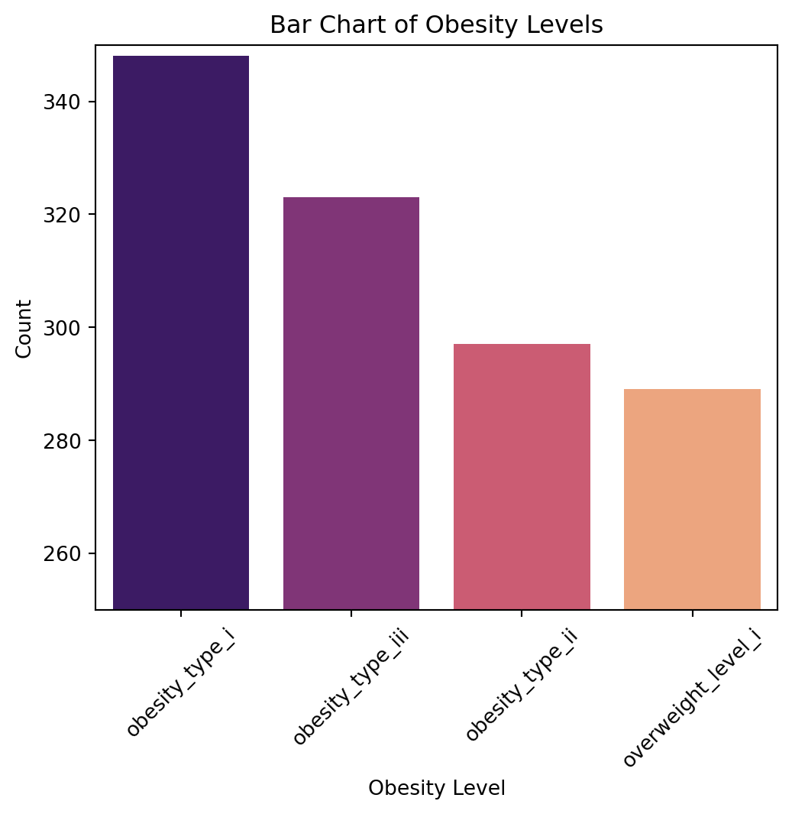
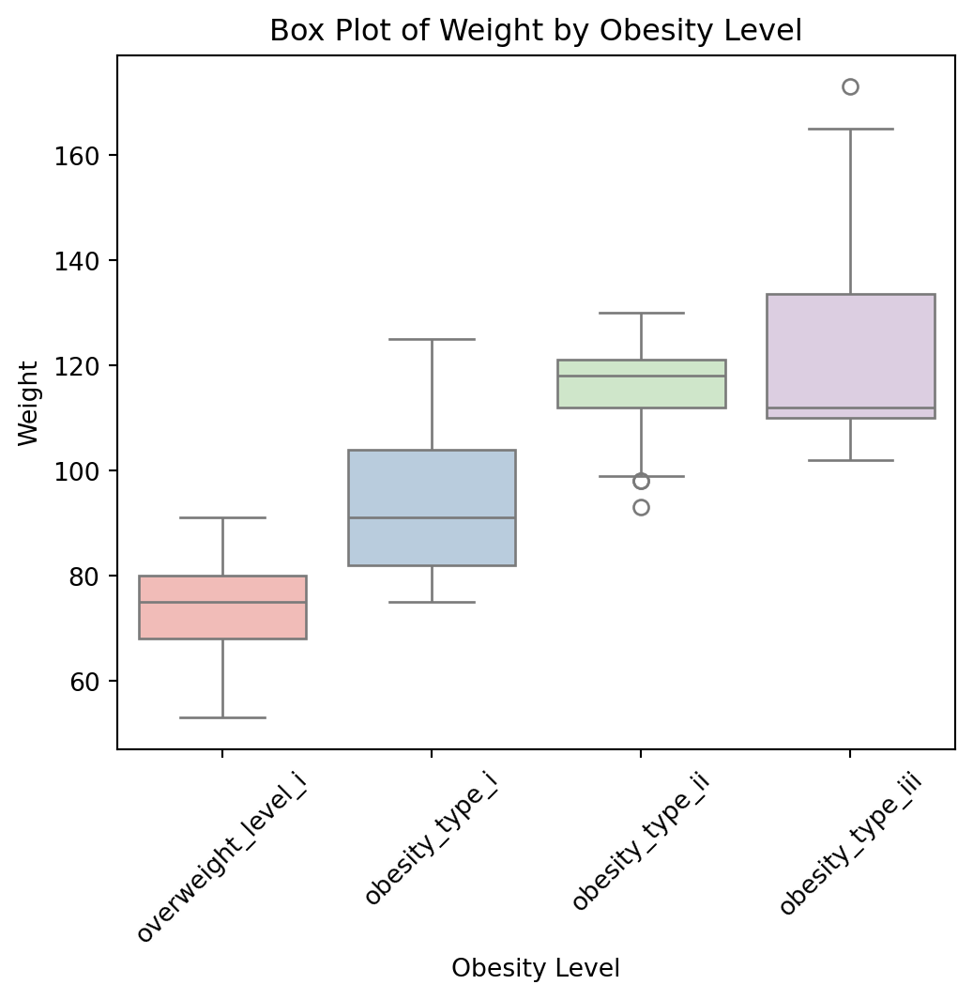
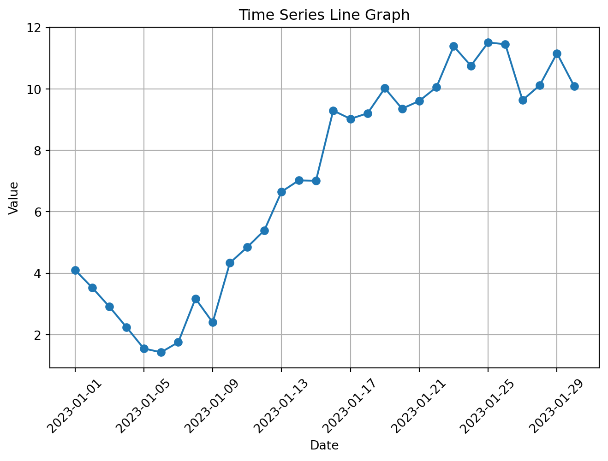

import matplotlib.pyplot as plt
plt.plot([1, 2, 3, 4])
plt.xlabel('This is also NUmbers')
plt.ylabel('Some Numbers')
plt.show()
Jiwon Shin
March 17, 2025
데이터 시각화 배우기!!!
Matplotlib : 기본적 시각화 라이브러리
Seaborn : 통계적 데이터 시각화에 특화
Pandas : 데이터프레임에서 간단한 그래프 출력 가능
import matplotlib.pyplot as plt
plt.plot([1, 2, 3, 4])
plt.xlabel('This is also NUmbers')
plt.ylabel('Some Numbers')
plt.show()
-> plot()에 단일 리스트 [1,2,3,4]를 넣으면, y값으로 해석하고 자동으로 x값을 [0,1,2,3]으로 설정!
import numpy as np
x = np.arange(-10, 11, 0.5)
y = x**3
plt.plot(x, y, 'ro') # ro = red circle; r^ = red rectangle;
plt.axis([0, 6, 0, 20]) # 축범위 (0,6) - x축 범위; (0,20) -y축 범위
plt.xlabel('x')
plt.ylabel('y')
plt.show()
import numpy as np
t = np.arange(0., 5., 0.2) # 0~5 사이 0.2 간격격
plt.plot(t, t, 'r--', # 빨간색 점선
t, t**2, 'bs', # 파란색 정사각형 마커
t, t**3, 'g^') # 초록색 삼각형 마커
plt.show()
text(x,y,‘내용’) 사용시 특정 위치에 텍스트 추가
plt.title(‘Example Plot’) -> 그래프 제목 지정
plt.xlabel(‘X Axis’), plt.ylabel(‘Y Axis’) -> x,y축 텍스트 추가
plt.legend(loc = ‘upper left’) -> 범례 표시 및 위치 지정
<class 'pandas.core.frame.DataFrame'>
RangeIndex: 1262 entries, 0 to 1261
Data columns (total 6 columns):
# Column Non-Null Count Dtype
--- ------ -------------- -----
0 Gender 1262 non-null object
1 Age 1262 non-null int64
2 Height 1262 non-null float64
3 Weight 1262 non-null int64
4 NObeyesdad 1262 non-null object
5 SMOKE 1262 non-null object
dtypes: float64(1), int64(2), object(3)
memory usage: 59.3+ KB연속형 데이터 분포를 나타내는 그래프
데이터를 특정 구간으로 나누고 빈도(bin)수를 막대의 높이로 표현
데이터의 분포 형태 확인 및 이상치 탐색
plt.hist(df['Age'],
bins=20,
alpha=0.1, # 막대의 투명도
edgecolor='black')
plt.xlabel("Age")
plt.ylabel("Frequency")
plt.show()
# Age 변수 이상치 판단 후 삭제
df = df.loc[~(df['Age'] >= 100), :]
df
| Gender | Age | Height | Weight | NObeyesdad | SMOKE | |
|---|---|---|---|---|---|---|
| 0 | male | 27 | 1.800000 | 87 | overweight_level_i | no |
| 1 | male | 26 | 1.850000 | 105 | obesity_type_i | no |
| 2 | male | 41 | 1.800000 | 99 | obesity_type_i | no |
| 3 | female | 29 | 1.530000 | 78 | obesity_type_i | no |
| 4 | female | 23 | 1.650000 | 70 | overweight_level_i | no |
| ... | ... | ... | ... | ... | ... | ... |
| 1257 | female | 21 | 1.710730 | 131 | obesity_type_iii | no |
| 1258 | female | 22 | 1.748584 | 134 | obesity_type_iii | no |
| 1259 | female | 23 | 1.752206 | 134 | obesity_type_iii | no |
| 1260 | female | 24 | 1.739450 | 133 | obesity_type_iii | no |
| 1261 | female | 24 | 1.738836 | 133 | obesity_type_iii | no |
1257 rows × 6 columns
히스토그램과 유사하지만 KDE를 사용하여 부드러운 형태로 변환
확률 밀도 함수의 추정값을 시각적으로 확인 가능
import seaborn as sns
import matplotlib.pyplot as plt
sns.kdeplot(df['Age'], shade=True)
plt.xlabel("Age")
plt.ylabel("Density")
plt.show()
# 밴드위스 조정
sns.kdeplot(df['Age'], bw_method=0.01, shade =True)
sns.kdeplot(df['Age'], bw_method=0.1, shade =True)
sns.kdeplot(df['Age'], bw_method=0.5, shade =True)C:\Users\USER\AppData\Local\Temp\ipykernel_16496\1935096718.py:3: FutureWarning:
`shade` is now deprecated in favor of `fill`; setting `fill=True`.
This will become an error in seaborn v0.14.0; please update your code.

C:\Users\USER\AppData\Local\Temp\ipykernel_16496\1935096718.py:9: FutureWarning:
`shade` is now deprecated in favor of `fill`; setting `fill=True`.
This will become an error in seaborn v0.14.0; please update your code.
C:\Users\USER\AppData\Local\Temp\ipykernel_16496\1935096718.py:10: FutureWarning:
`shade` is now deprecated in favor of `fill`; setting `fill=True`.
This will become an error in seaborn v0.14.0; please update your code.
C:\Users\USER\AppData\Local\Temp\ipykernel_16496\1935096718.py:11: FutureWarning:
`shade` is now deprecated in favor of `fill`; setting `fill=True`.
This will become an error in seaborn v0.14.0; please update your code.

범주형 데이터의 빈도나 특정 값의 크기를 비교하는 그래프
그룹별 비교 및 카테고리별 값의 차이 확인
category_counts = df['NObeyesdad'].value_counts()
plt.figure(figsize=(6,5))
sns.barplot(x = category_counts.index,
y = category_counts.values,
palette = 'magma') # palette: magama/rocket/....
plt.xlabel("Obesity Level")
plt.ylabel("Count")
plt.ylim(250,350)
plt.title("Bar Chart of Obesity Levels")
plt.xticks(rotation=45)
plt.show()C:\Users\USER\AppData\Local\Temp\ipykernel_16496\3353004455.py:3: FutureWarning:
Passing `palette` without assigning `hue` is deprecated and will be removed in v0.14.0. Assign the `x` variable to `hue` and set `legend=False` for the same effect.

데이터의 분포와 이상치를 확인하는 그래프
최소값, Q1,Q2(중앙값),Q3, 최대값, 이상치(outlier) 표시
이상치 판단 기준
IQR = Q3 - Q1
데이터 중 Q1과 Q3 1.5*IQR 범위 밖의 데이터는 ‘이상치 분류’
np.random.seed(25317)
x = np.random.randint(1, 21, size = 15)
np.sort(x)
# 1, 3, 3, 5, 5, 6, 6, 8, 11, 13, 13, 15, 18, 18, 20
q2 = 8
np.sort(x[x<q2])
q1 = 5
np.sort(x[x>q2])
q3 = 15
q1,q2,q3
IQR = q3 - q1
# 이상치 계산
# 상위 이상치
1.5*IQR
# 하위 이상치
-1.5*IQR-15.0plt.figure(figsize=(6,5))
sns.boxplot(x=df['NObeyesdad'],
y=df['Weight'],
palette="Pastel1")
plt.xlabel("Obesity Level")
plt.ylabel("Weight")
plt.title("Box Plot of Weight by Obesity Level")
plt.xticks(rotation=45)
plt.show()C:\Users\USER\AppData\Local\Temp\ipykernel_16496\2940293794.py:2: FutureWarning:
Passing `palette` without assigning `hue` is deprecated and will be removed in v0.14.0. Assign the `x` variable to `hue` and set `legend=False` for the same effect.

데이터 행렬의 색상을 색깔로 표현한 그래프
상관관계 분석 그래프
시간에 따른 값의 변화를 나타낸 그래프
X축이 시간, Y축이 해당하는 시간의 값
추세 분석이 목적
dates = pd.date_range(start='2023-01-01', periods=30, freq='D')
values = np.cumsum(np.random.randn(30)) + 5
df_timeseries = pd.DataFrame({"Date": dates, "Value": values})
# 시계열 그래프 생성
plt.figure(figsize=(8, 5))
plt.plot(df_timeseries['Date'], df_timeseries['Value'], marker='o', linestyle='-')
plt.xlabel("Date")
plt.ylabel("Value")
plt.title("Time Series Line Graph")
plt.xticks(rotation=45)
plt.grid(True)
plt.show()
두 개이상의 범주형 변수 간의 관계를 시각화 하는 그래프
범주형 데이터 간의 관계 분석이 목적